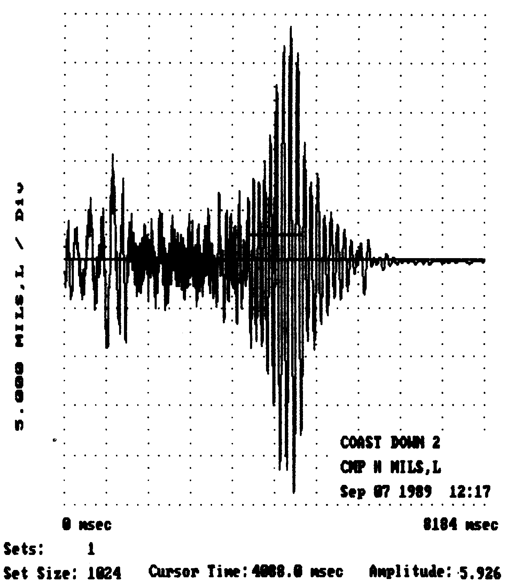
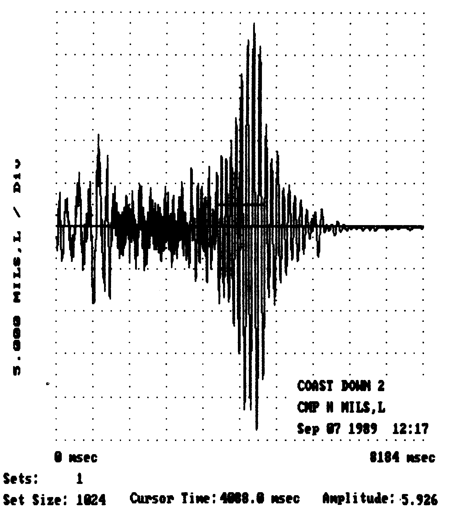

WEB1 - DAKEST NIGHT
- 인과응보
- 허공답보
| 탄수화물 |
32.1% |
| 단백질 |
29.4% |
| 지방 |
33.4% |
#html specificatio은 html을 잘 설명해주는 사이트
DAKEST NIGHT
어두운 밤하늘 흔든다. 푸른색?
밤을 따라....
#제목을 나타내는 태그
빛나 흰색 고르는
여명이 빛나는 것은 무엇인가?
결국 그것은 하나의 진동이며 끊이없는 연쇄인것이다.
하나가 끝나고, 다음이 오는 것은 필연적이지는 않다.
하나가 끝나고, 다음이 온다.
정하여진 기준에서 말하는 전후, 좌우, 상하 따위의 차례 관계.
[비슷한 말] 수순1ㆍ애차2(埃次)ㆍ윤서2(倫序).
순서를 바로잡다
순서가 바뀌다
순서를 맞추다
coding
 >

>
